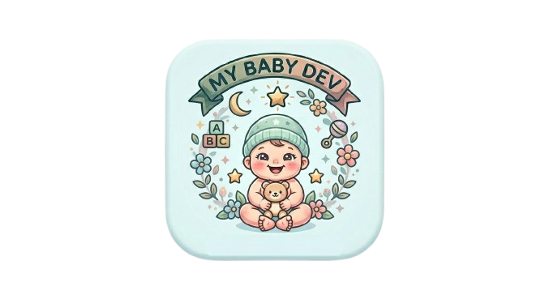

מדריך התפתחות
של התינוק שלך
שבוע אחר שבוע בחודש הראשון,
וחודש בחודשו עד גיל שנה -
כל מה שצריך לדעת, צעד אחר צעד, במקום אחד
מתי נולד/ה התינוק/ת שלך?
הכניסי תאריך לידה ונראה יחד מה קורה השבוע/החודש
מחשבון אחוזוני
גדילה
הזיני משקל, גובה וגיל - ותקבלי מיד את האחוזון לפי תקני ארגון הבריאות העולמי.
⚠️ לתינוקות פגים: יש להשתמש בגיל מתוקן - מגיל הלידה בפועל יש לגרוע את מספר שבועות הפגות. לדוגמה: תינוק שנולד בשבוע 32 (8 שבועות מוקדם) ועכשיו בן 4 חודשים - גילו המתוקן הוא חודשיים בלבד. יש להשתמש בגיל המתוקן עד גיל שנתיים.
מדריך הטעימות
הנגיסה הראשונה
כל מה שצריך לדעת על הכנסת מזון מוצק - חודש אחר חודש, שלב אחר שלב.
טיפ: לתת את האלרגן בבוקר - כך ניתן לעקוב אחרי תגובה במשך היום. לא לתת לפני שינה.
סימני אלרגיה שיש לשים לב אליהם: פריחה, נפיחות, קושי בנשימה, הקאה לאחר אכילה - לפנות לרופא.
טיפים חיוניים
לשנה הראשונה
הדברים הכי חשובים שכל הורה צריך לדעת - מהיום הראשון ועד גיל שנה.
ברזל: מגיל 4 חודשים - ניתן להתייעץ עם רופא הילדים על הצורך בתוסף. בגיל 9-12 חודשים - בדיקת דם לברזל מומלצת לכולם.
מדריך זה נבנה באהבה 💗
המדריך נבנה כדי לעזור להורים ללוות את תינוקם בשנה הראשונה המדהימה לחייו - שבוע אחר שבוע, חודש אחר חודש.
הטקסט נכתב בלשון נקבה, אך מתייחס לכל הורה - אמא, אבא, או כל מי שמגדל תינוק.
המידע מבוסס על הנחיות ארגון הבריאות העולמי (WHO), האגודה הישראלית לרפואת ילדים, ועל ידע מצטבר של מומחים מובילים בתחום: רופאי ילדים, פסיכולוגים התפתחותיים, מומחי שינה לתינוקות, קלינאיות תקשורת, ומטפלות בהתפתחות הילד.
המידע באתר זה מוצג למטרות לימוד והעשרה בלבד, ואינו מהווה ייעוץ רפואי מקצועי. השימוש במידע הוא באחריותכם המלאה.